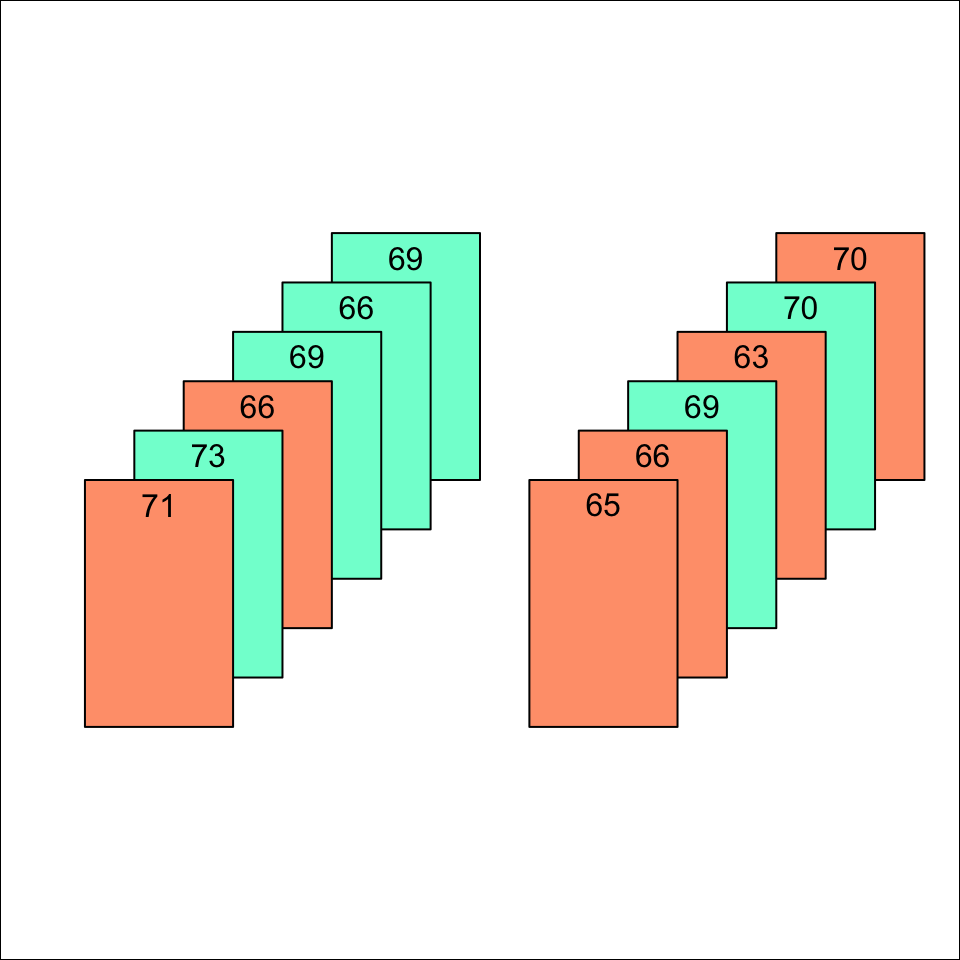

Doing the Shuffle
Ronald Fisher imagined a situation comparing the heights of a sample of Englishmen and Frenchmen. Each of the height measurements is written on a card, the color of the card indicating the nationality of the person. There are two stacks of cards, one for the English, one for the French. Like this …
The average height for each stack can be calculated and compared.
- English: 66.8
- French 69.3
- Difference: -2.5
In this sample, the Frenchmen are taller than the English by 2.5 inches.
Fisher went on to explain.
The simplest way of understanding quite rigorously, yet without mathematics, what the calculations of the test of significance amount to, is to consider what would happen if our … cards, shuffled without regard to nationality, and divided at random into two new groups.
Like this:
- Left stack: 69.2
- Right stack: 67
- Difference: 2.2
This division could be done in an enormous number of ways …

We may suppose that for each of these ways the difference between the two average statures is calculated. … [If] the two populations were homogeneous, there would be nothing to distinguish the particular subdivision in which the Frenchmen are separated from the Englishmen from among the aggregate of the other possible separations which might have been made [by shuffling the cards].
Now with Tidy Data
Rather than storing the data on cards and putting them into stacks according to nationality, let’s put it in a tidy format:
The groupwise means are calculated in the same way.
AngloFrenchHeights %>%
df_stats(height ~ nation, mn = mean)To use Fisher’s analogy, height ~ nation means to deal out the cards into stacks by nation, and then perform the calculation on the height in each stack.
You might be thinking that the shuffling is a matter of re-arranging the rows in the data table, but this is not right. In the following command, the cards are put in random order, but they are still dealed out according to nation.
AngloFrenchHeights %>%
shuffle() %>%
df_stats(height ~ nation, mn = mean)The shuffle() function randomly reorders the input but the cards are still being dealt into stacks according to nation.
Instead, we need to do the dealing not according to nation itself, but with the nation being shuffled.
AngloFrenchHeights %>%
df_stats(height ~ shuffle(nation), mn = mean)Calculating the difference
It’s easy enough to look at the output from qstats() and figure out the difference between the average heights of each group.
But it’s also helpful to automate the entire calculation. So let’s add a post-processing step that finds the diffence:
AngloFrenchHeights %>%
df_stats(height ~ shuffle(nation), mn = mean) %>%
summarise(delta = diff(mn))Many Trials
We already have a command for computing one shuffling trial.
AngloFrenchHeights %>%
df_stats(height ~ shuffle(nation), mn = mean) %>%
summarise(delta = diff(mn))We can repeat that command many times to accumulate the many trials of which Fisher spoke. The do() notation is helpful here:
# conduct the trials
Trials <-
do(10) * {
AngloFrenchHeights %>%
df_stats(height ~ shuffle(nation), mn = mean) %>%
summarise(delta = diff(mn))
}
# and graph it along with the actual value
Trials %>%
gf_histogram( ~ delta) %>%
gf_vline(xintercept = -2.5, color = "red")
# or calculate the fraction of trials that exceed
# the actual value in magnitude, i.e. the p-value
Trials %>%
df_stats( ~ abs(delta) >= abs(-2.5), p_value = mean)Exercise
Change the above statement to use 100 trials for the p-value calculation. Also, add an argument mean.conf to the df_stats() function call. This will give the confidence interval on the p-value.
- From this very small sample of heights of Englishmen and Frenchmen, are we justified in claiming that the populations have different heights?
- Repeat the calculation using 400 trials. The confidence interval on the p-value should be half as wide as in the 100-trial calculation. What would you look for in a confidence interval on the p-value to judge whether it’s justified to reject the null hypothesis?